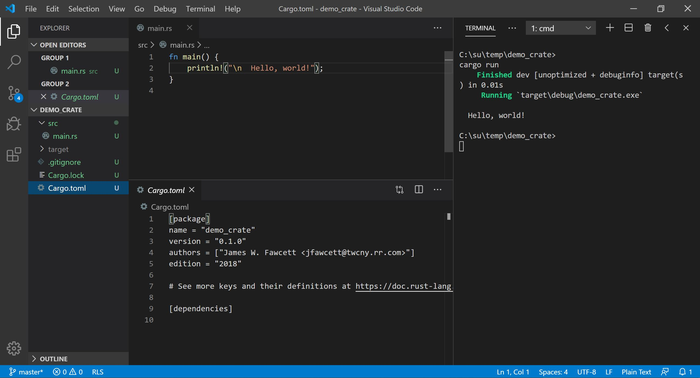

about
2/19/2022
RustBites - Introduction
RustBites - Introduction
Why Rust, What are Bites?
Why Rust?
The job market for Rust Developers
is smaller than for traditional languages like C++, C#, and Java, but is growing rapidly.
Rust Highs
-
Memory and Data Race Safety Compiler enforced data ownership and reference rules insure Memory and Data Race safety. -
Performance Rust compiles to native code and does not need garbage collection, so it is as fast as C and C++. -
Error Handling Any function that can fail returns a result indicating success or failure. Code has to handle errors in well defined ways. -
Simple Value Behavior Rust supports value behavior without the need for program developers to define copy and move constructors, assignment operators, and destructors. Developers need only define a single clone operation that is called explicitly. The rest is handled by Rust's unique type system. -
Clever design of type system results in fewer context dependencies.
Rust code describes how its program uses platform resources more accurately than other popular languages.
-
Rust programs tend to work correctly as soon as they compile.
There are no memory bugs or race conditions to find and fix.
-
Very Effective Tool Chain The cargo tool creates, manages dependencies, builds, and executes programs and library tests. -
Fairly small syntax and library footprint with excellent documentation.
Makes learning Rust relatively easy.
Rust Lows
- Safety restricts the way references can be used. That takes some getting used to. Building Rust code for the first time usually results in a sequence of reference violations that need to be fixed. The compiler has excellent error messages, so that isn't as difficult as it would be otherwise.
- Because of the static analysis of reference handling, compile times tend to be longer than for languages like C++.
Getting Started
-
Rust Tool Chain:
For any environment, download Rust tools. This gives you Cargo, the Rust package manager, rustc, the Rust compiler, and several other tools you will eventually find quite useful. This is all the tooling you need to start. -
Visual Studio Code
Rust doesn't come with an IDE, but VS Code gives you a text editor with a terminal pane, from which you enter Cargo commands build, run, clean, and more. You will want to install the VS Code plugin Rust (rls) which gives you some syntax highlighting and code completion. You will find, in the left border, an icon for selecting plugins. Just use the search box to find rls. The VS Code model expects you to use JSON files to configure build and debug launchers. I have found that occasionally hard to use, and often requires more effort to configure than I am willing to spend on this tool. Working in the code editor and launching Cargo commands in the terminal works well for me. For Windows, I replaced powershell (PS) with the cmd prompt, but you may wish to use PS. On linux the default bash terminal works well. -
Starting Code
Create an empty RustCode folder, open a terminal, and type:
> cargo new helloThat creates a Rust package that contains a hello world program. Enough to show you how to create a function and print something to the console. This works because the Rust installation put cargo on your path.When the package has been created - a second or two - type the command: > cargo runYou will see cargo invoke rustc, the Rust compiler, then run the resulting executable.> cargo --helpand> cargo --listwill show you other things that cargo can do for you.Note: In order to build and run with cargo from the Visual Studio Code terminal you need to open VS Code in the package folder for the code you want to build and run. That's the folder where the package cargo.toml file resides.If you open VS Code and, using the file menu, open the folder you created above, you will see a cargo.toml file, which holds metadata for the package, and a src folder. Open that and select main.rs. There you will see a main function which simply prints "hello world" in your terminal. That's all there is to do to get started. The world is yours! -- at least the Rust programming world :-)
References:
| Reference | Description |
|---|---|
| Jon Gjengset | Considering Rust - why should you explore Rust? |
| RustTour.pdf | Quick tour of the Rust programming language emphasizing its unique attributes. |